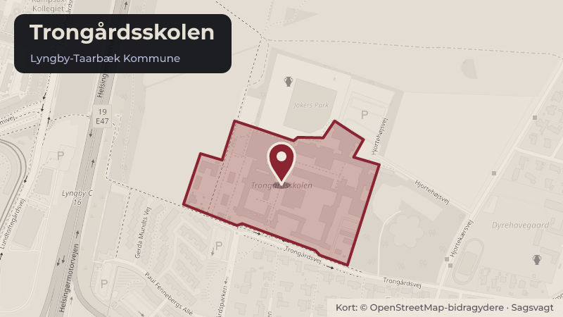

Besluttet 3. september, Kommunalbestyrelsen, Lyngby-Taarbæk
Anlægsbevilling til Pedelboligen på Trongårdsskolen
Der er behov for en anlægsbevilling til at færdiggøre anlægsprojektet "Brandsikring og statik Pedelboligen Trongårdsskolen" inden for det afsatte rådighedsbeløb. Den tidligere pedelbolig anvendes nu til skoleformål.
BoligerSkoler og børnBudget og økonomi
Steder i sagen: Trongårdsskolen

Kort fortalt
- Hvem
- Kommunalbestyrelsen, Lyngby-Taarbæk Kommune
- Hvornår
- Torsdag 3. september 2026
- Status
- Besluttet. Ad 1-2) Godkendt. I stedet deltog Majbrit Pedersen (F).
- Næste skridt
- Såfremt anlægsbevillingen godkendes, vil forvaltningen efterfølgende gå videre med gennemførelsen af projektet.
Læs hele sagen Kommunens egen tekst
Indstilling
Forvaltningen foreslår, at
1. der gives en anlægsbevilling på 0,7 mio. kr. til anlægsprojektet "Brandsikring og statik
Pedelboligen Trongårdsskolen" i 2026, finansieret af det afsatte rådighedsbeløb i 2026,
2. det estimerede mindreforbrug på 1,1 mio. kr. på anlægsprojektet "Brandsikring og statik
Pedelboligen Trongårdsskolen" overføres til "Anlægspuljen til uforudsete anlægsudgifter"
Problemstilling
Der er etableret kapacitet til en gruppeordning for elever i den tidligere pedelbolig på
Trongårdsskolen. En screening af bygningen i 2025 viste, at den ændrede anvendelse
forudsatte forskellige tiltag for at lovliggøre bygningen. Det var således en forudsætning for at
tage bygningen i brug til skoleformål, at brand- og statikforhold blev bragt i overensstemmelse
med gældende krav.
Kommunalbestyrelsen besluttede derfor den 6. maj 2025 (sag nr. 2) at afsætte midler til
lovliggørelse af den tidligere pedelbolig på Trongårdsskolen, så bygningen kan anvendes til
skoleformål. Der blev i den forbindelse afsat et samlet rådighedsbeløb på 2,5 mio. kr. og givet
en anlægsbevilling på 0,7 mio. kr. til de indledende aktiviteter, herunder rådgivning,
projektering, myndighedsafklaring og sanering af bygningen.
På tidspunktet for sagens behandling var projektets endelige omfang og økonomi forbundet
med betydelig usikkerhed. Forvaltningen afventede en række nødvendige dispensationer og
myndighedsmæssige afklaringer af væsentlig betydning for både projektudførelsen og
projektets samlede økonomi.
Løsninger
På baggrund af de nu foreliggende dispensationer samt den gennemførte projektafklaring
vurderer forvaltningen, at projektet kan gennemføres inden for en samlet anlægsbevilling på
1,4 mio. kr. Der er derfor behov for en yderligere anlægsbevilling på 0,7 mio. kr. til at at
gennemføre de nødvendige arbejder med lovliggørelse bygningen i 2026. Anlægsbevillingen
finansieres inden for det allerede afsatte rådighedsbeløb i 2026.
Idet projektet kan gennemføres inden for en samlet anlægsbevilling på 1,4 mio. kr., forventer
forvaltningen et mindreforbrug på 1,1 mio. kr. i forhold til det afsatte rådighedsbeløb på 2,5 mio.
kr. Forvaltningen anbefaler, at mindreforbruget tilføres "Anlægspuljen til uforudsete
anlægsudgifter" i 2026.
Strategisk ramme
Realisering af kommunens anlægsprogram.
Videre proces
Såfremt anlægsbevillingen godkendes, vil forvaltningen efterfølgende gå videre med
gennemførelsen af projektet.
Økonomi
Sagens bevillingsmæssige konsekvenser fremgår nedenfor:
Udvalg /
Aktivitetsområde
Varig?
ja/nej
t. kr. i 2026 p/l
Brandsikring og statik
Pedelboligen
Trongårdsskolen
Anlægspuljen til
uforudsete
anlægsudgifter
Økonomiudvalget /
Anlæg
Nej
Økonomiudvalget /
Anlæg
Nej
i alt
Beslutningskompetence
Økonomiudvalget anbefaler.
Kommunalbestyrelsen beslutter.
Beslutningsforløb
Beslutning fra Økonomiudvalget 2026-2029, den 27. august 2026, punkt 7:
Ad 1-2) Anbefalet.
Beslutning
Ad 1-2) Godkendt.
Niels Haxthausen (F) var fraværende. I stedet deltog Majbrit Pedersen (F).
Kilde: Lyngby-Taarbæk Kommune, Kommunalbestyrelsen, referat fra mødet torsdag 3. september 2026, punkt 6. Læs den originale sag hos kommunen.